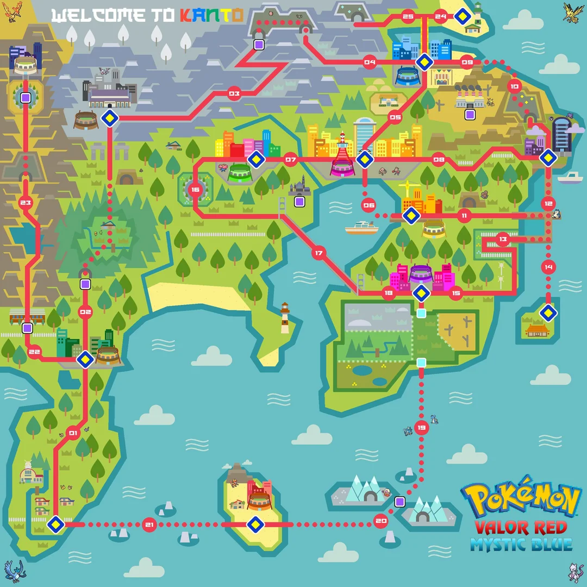
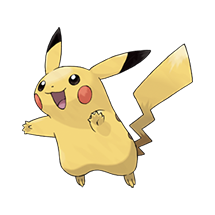
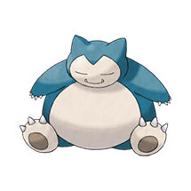
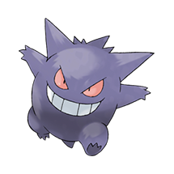
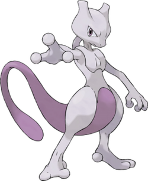

Beyond the starter trio, the Kanto region is home to some of the most famous
and powerful Pokémon in anime history. Hover over any Pokémon below to inspect
their archive card!

Featured PokéDex Entries

#025 Pikachu — Electric Type. The iconic mascot known for its Thunderbolt
attack.
#133 Eevee — Normal Type. Possesses unstable genetic code allowing multiple
evolutions.

#143 Snorlax — Normal Type. Spend its days eating and sleeping freely.

#094 Gengar — Ghost / Poison Type. Hides in shadows and drops the room
temperature.

#150 Mewtwo — Psychic Type. A legendary Pokémon created by genetic
manipulation.